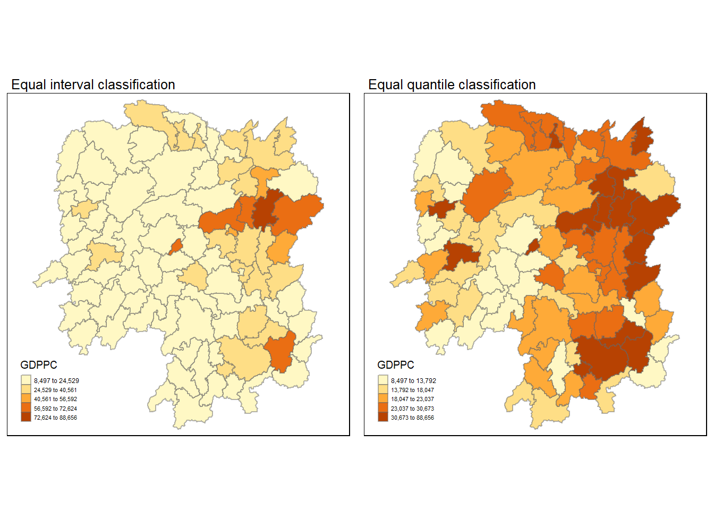
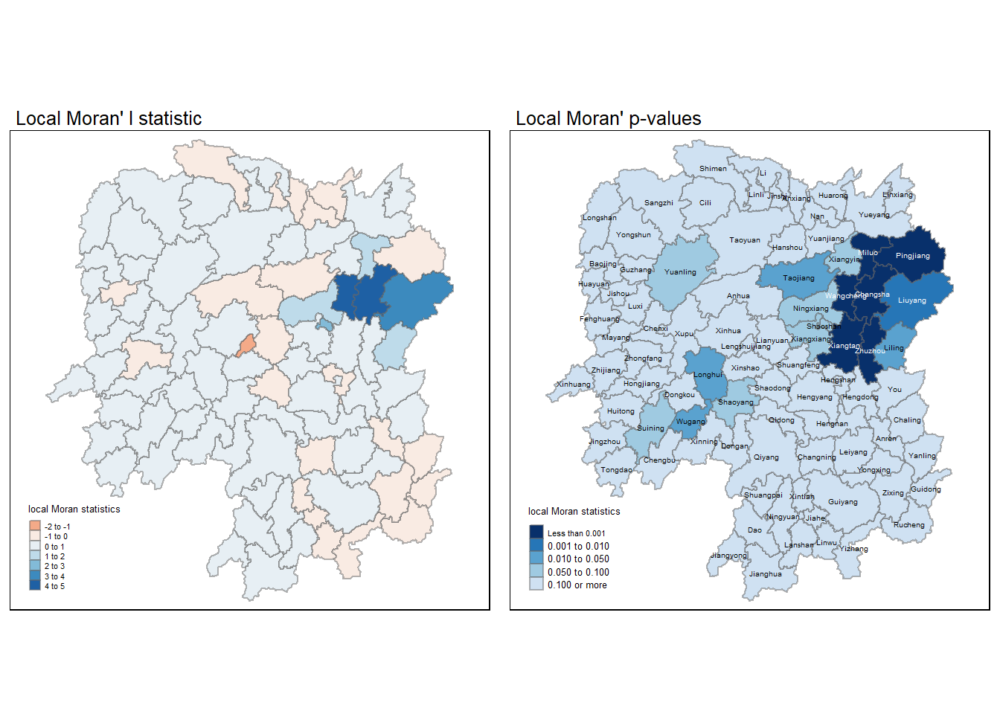
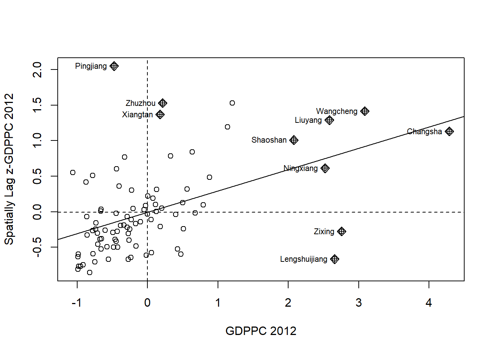
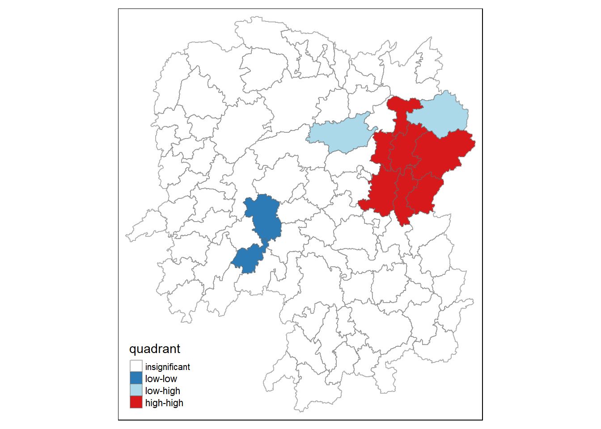
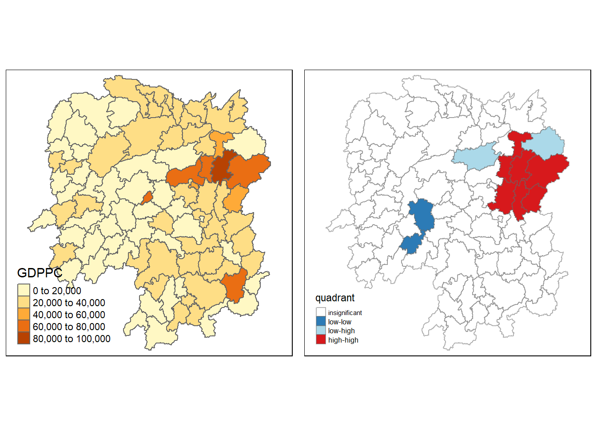
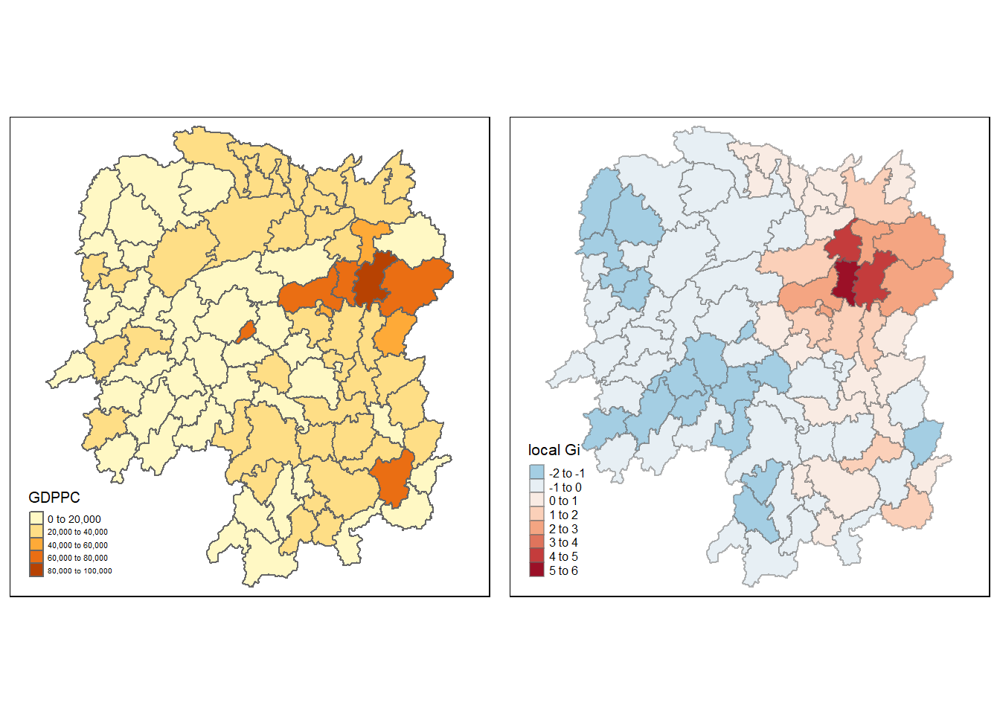
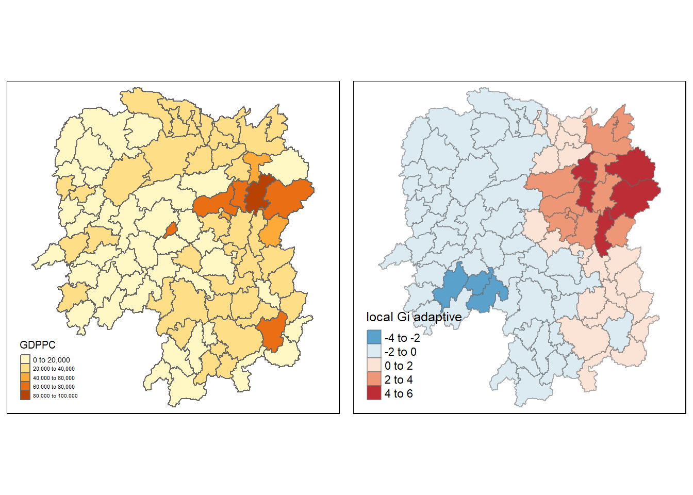

2. computing Local measure of Spatial Autocorrelation (LISA) to detect clusters and outliers by using spdep packages
3. computing Getis-Ord’s Gi-statistics for detecting hot spot or/ and cold spot area by using spdep package
4. visualising the analysis output by using tmap package
4.2 Getting Started
Recall
wm_q is neighbour list (class = nb) <- poly2nb()
for distance based concept, find coordinates to relate to polygons first. Next find the upper bound so that each polygon has at least one neighbour. Use knearneigh() to find k-nearest neighbour, then convert knn object to nb object using knn2nb(). Lastly, use nbdists() to calculate distance of all neighbours. Use unlist() to remove list structure. use summary (k1dists) to check details. Get the threshold distance.
Now we have coords and a distance threshold , we can create a neighbour list of nb class using dnearneigh(coords, 0, 62, longlat = TRUE)
wm_d62 is a neighbour list obj with class nb, made from dnearneighbour(). Use summary(wm_d62) to check details. Use str(wm_d62) to see attributes, then index (wm_d62[1:5]) to view first 5 neighbour list.
Alternatively, we can create a neighbour list based on adaptive distance using knn2nb( knearneigh(coords, k = 6)). knn6 is a neighbour list obj with class nb. We can plot the neighbours on map.
Use nb2listw() to convert from nb obj to listw obj (To create spatial weight object to calculate spatial lag later)
In hands-on 3 , rswm_q is equal weightage spatial matrix object via rows standardisation <- nb2listw( nb class obj) . This is based on contiguity concept.
In hands-on 3, rswm_ids is a weighted spatial matrix object using contiguity concept, but infused with ids (inverse distance matrix, class list) <- nb2listw(nb class obj, glist = ids, style=‘B’). This is also based on contiguity method, but style B which is more robust as we differ the weighting according to another inverse distance matrix separately derived.
in hands-on 4, wm62_lw is the binary weight spatial matrix object using fixed-distance concept. wm62_lw <- nb2listw(wm_d62, style = ‘B’). Can use summary(wm62_lw) for quick discovery. str(wm62_lw) to check attributes and then index wm62_lw$weights[1:5] to check the first five weights of our spatial weights matrix (binary)
in hands-on 4, knn_lw is the binary weight spatial matrix object using adaptive distance concept (fixed number of neighbours)
GDPPC.lag <- a spatial lag variable that gives the averaged neighbour GDPPC value for one’s neighbours <- lag.listw( weight matrix, shapefile file $ col)
Other points to note: cbind() is to combine data frame with same number of rows.
hunan is a simple feature collection with class ‘sf’ , ’ data frame’
Create a new sf data frame (hunan.gi) by adding a localG vector to hunan as a new column, use cbind() and then rename column. as.matrix(gi.fixed) straightens the Gi values into 1 col of 88 rows.
Add a new column of standardised GDPPC by scaling original GDPPC column.
hunan$Z.GDPPC <- scale(hunan$GDPPC) %>% as.vector
The most indirect method (hands-on 3)
lag.list <- list ( hunan$NAME_3, lag.listw (rswm_q, hunan $ GDPPC))
lag.res <- as.data.frame(lag.list)
colnames(lag.res) <- c(‘colname1’ , ‘colname2’)
hunan <- leftjoin(hunan, lag.res)
4.2.1 The analytical question
is there equal distribution of development in the province?
if answer is NO, we ask “is there sign of clustering?” (GLOBAL spatial autocorrelation)
if YES, “Where are the clusters” (LOCAL spatial autocorrelation)
In this case study, we are interested to examine the spatial pattern of a selected development indicator (i.e. GDP per capita) of Hunan Provice, People Republic of China.
4.2.2 The Study Area and Data
Two data sets will be used in this hands-on exercise:
geospatial data: Hunan province administrative boundary layer at county level in ESRI shapefile format
aspatial data: Hunan_2012.csv containing local development indicators
4.2.3 Setting the Analytical Tools
Packages we need:
sf is use for importing and handling geospatial data in R,
tidyverse is mainly use for wrangling attribute data in R,
spdep will be used to compute spatial weights, global and local spatial autocorrelation statistics, and
tmap will be used to prepare cartographic quality chropleth map.
library(sf)
Linking to GEOS 3.9.3, GDAL 3.5.2, PROJ 8.2.1; sf_use_s2() is TRUE
library(spdep)
Loading required package: sp
Loading required package: spData
To access larger datasets in this package, install the spDataLarge
package with: `install.packages('spDataLarge',
repos='https://nowosad.github.io/drat/', type='source')`
Rows: 88 Columns: 29
── Column specification ────────────────────────────────────────────────────────
Delimiter: ","
chr (2): County, City
dbl (27): avg_wage, deposite, FAI, Gov_Rev, Gov_Exp, GDP, GDPPC, GIO, Loan, ...
ℹ Use `spec()` to retrieve the full column specification for this data.
ℹ Specify the column types or set `show_col_types = FALSE` to quiet this message.
Legend labels were too wide. The labels have been resized to 0.36, 0.33, 0.33, 0.33, 0.33. Increase legend.width (argument of tm_layout) to make the legend wider and therefore the labels larger.
Legend labels were too wide. The labels have been resized to 0.36, 0.33, 0.33, 0.33, 0.33. Increase legend.width (argument of tm_layout) to make the legend wider and therefore the labels larger.

4.4 Global Spatial Autocorrelation
compute global spatial autocorrelation statistics
perform spatial complete randomness test for global spatial autocorrelation.
4.4.1 Computing Contiguity Spatial Weights
Construct a spatial weights of study area using poly2nb() of the spdep package. This builds a neighbour list using contiguous boundaries.
wm_q <-poly2nb(hunan, queen=TRUE)summary(wm_q)
Neighbour list object:
Number of regions: 88
Number of nonzero links: 448
Percentage nonzero weights: 5.785124
Average number of links: 5.090909
Link number distribution:
1 2 3 4 5 6 7 8 9 11
2 2 12 16 24 14 11 4 2 1
2 least connected regions:
30 65 with 1 link
1 most connected region:
85 with 11 links
The summary report above shows that there are 88 area units in Hunan. The most connected area unit has 11 neighbours. There are two area units with only one neighbours. The mode is 5 neighbours and there are 24 county with 5 neighbours.
4.4.2 Row-standardised weights matrix
This is one of the ways to assign weights to each neighboring polygon. Each neighbouring polygons will be assigned to equal weight (style = “W”). A fraction of (1/ #neighbours) will be assigned to each neighbouring country, then summing up the weighted GDPPC values.
This is an intuitive way to summarise neighbours’ values, but the drawback is that polygon along the edges have less neighbours and thus we might over or under estimate the true nature of the spatial autocorrelation in the data. Note that more robust option are available, notably style =“B” of the nb2listw() function.
Characteristics of weights list object:
Neighbour list object:
Number of regions: 88
Number of nonzero links: 448
Percentage nonzero weights: 5.785124
Average number of links: 5.090909
Weights style: W
Weights constants summary:
n nn S0 S1 S2
W 88 7744 88 37.86334 365.9147
[1] aggregate edit intersect plot print setdiff subset
[8] summary union
see '?methods' for accessing help and source code
The input of nb2listw() must be an object of class nb. The syntax of the function has two major arguments, namely style and zero.poly.
style can take values “W”, “B”, “C”, “U”, “minmax” and “S”. B is the basic binary coding, W is row standardised (sums over all links to n), C is globally standardised (sums over all links to n), U is equal to C divided by the number of neighbours (sums over all links to unity), while S is the variance-stabilizing coding scheme proposed by Tiefelsdorf et al. 1999, p. 167-168 (sums over all links to n).
If zero policy is set to TRUE, weights vectors of zero length are inserted for regions without neighbour in the neighbours list. These will in turn generate lag values of zero, equivalent to the sum of products of the zero row t(rep(0, length=length(neighbours))) %*% x, for arbitrary numerical vector x of length length(neighbours). The spatially lagged value of x for the zero-neighbour region will then be zero, which may (or may not) be a sensible choice.
4.4.3 Global Spatial Autocorrelation: Moran’s I
In this section, I will perform Moran’s I statistics testing by using moran.test() of spdep.
4.4.4 Moran’s I test
“na.omit() returns the object with incomplete cases removed”
Moran I test under randomisation
data: hunan$GDPPC
weights: rswm_q
Moran I statistic standard deviate = 4.7351, p-value = 1.095e-06
alternative hypothesis: greater
sample estimates:
Moran I statistic Expectation Variance
0.300749970 -0.011494253 0.004348351
Null hypothesis: The data observations are randomised.
Alternative hypothesis: The data observations are not randomised (etc, clustering or deviations are observed between some observations)
The Moran’s I statistic value is positive, it implies that some clustering is observed.
At a p-value of less than 0.05, we have enough statistical evidence to reject the null hypothesis and conclude that some of the observation are not randomly distributed.
4.4.4.1 Computing Monte Carlo Moran’s I
The code chunk below performs permutation test for Moran’s I statistic by using moran.mc() of spdep. A total of 1000 simulation will be performed. When there is uncertainty in the data (data changes every week), we use Monte Carlo simulation (rand(), randbetween(), poisson(), depending on understanding of data), to generate 1000 random values)
* simulation starts from ‘1’, to get 1000 simulations, we start at 1 and end with 999 (inclusive)
Monte-Carlo simulation of Moran I
data: hunan$GDPPC
weights: rswm_q
number of simulations + 1: 1000
statistic = 0.30075, observed rank = 1000, p-value = 0.001
alternative hypothesis: greater
With a Moran I value of 0.30075 (positive means clustering, 0 means random, neg means deviation) , and a p value of less than 0.05 (statisfically significant), there are signs of clustering in the GDPPC in Hunan in some regions.
4.4.4.2 Visualising Monte Carlo Moran’s I
It is always a good practice for us the examine the simulated Moran’s I test statistics in greater detail. This can be achieved by plotting the distribution of the statistical values as a histogram by using the code chunk below.
In the code chunk below hist() and abline() of R Graphics are used.
str(bperm)
List of 7
$ statistic : Named num 0.301
..- attr(*, "names")= chr "statistic"
$ parameter : Named num 1000
..- attr(*, "names")= chr "observed rank"
$ p.value : num 0.001
$ alternative: chr "greater"
$ method : chr "Monte-Carlo simulation of Moran I"
$ data.name : chr "hunan$GDPPC \nweights: rswm_q \nnumber of simulations + 1: 1000 \n"
$ res : num [1:1000] 0.05798 0.09954 0.06943 -0.10422 0.00381 ...
- attr(*, "class")= chr [1:2] "htest" "mc.sim"
Min. 1st Qu. Median Mean 3rd Qu. Max.
-0.18339 -0.06168 -0.02125 -0.01505 0.02611 0.27593
Plot histogrambreaks: number of histogram cells
freq: logical; if TRUE, the histogram graphic is a representation of frequencies, the counts component of the result; if FALSE, probability densities, component density, are plotted (so that the histogram has a total area of one). Defaults to TRUEif and only ifbreaks are equidistant (and probability is not specified).
Conclusion: Moran I value obtained earlier was 0.30075, it is likely to be more extreme than the critical value, which means highly likely that my dataset is very different from the null hypothesis. In other words, Moran I value of 0.30075 shows that signs of clustering is likely to be true than it is to be expected by chance alone.
Challenge: Plot histogram using ggplot2 instead
library(ggplot2)bperm.df <-as.data.frame(bperm$res)colnames(bperm.df)[1] <-'res'c <-ggplot(bperm.df, aes(res))c +geom_histogram(boundary =0,colour ='black',binwidth =0.02,alpha=0.5) +geom_vline(xintercept=0,colour ='red') +labs(title ="Histogram of Moran's I",x ="Simulated Moran' I ")
4.4.5 Global Spatial Autocorrelation: Geary’s
In this section, you will learn how to perform Geary’s c statistics testing by using appropriate functions of spdep package.
4.4.5.1 Geary’s C test
Geary’s C test for spatial autocorrelation by using geary.test() of spdep.
geary.test(hunan$GDPPC, listw=rswm_q)
Geary C test under randomisation
data: hunan$GDPPC
weights: rswm_q
Geary C statistic standard deviate = 3.6108, p-value = 0.0001526
alternative hypothesis: Expectation greater than statistic
sample estimates:
Geary C statistic Expectation Variance
0.6907223 1.0000000 0.0073364
Null hypothesis: The data observations are randomised.
Alternative hypothesis: The data observations are not randomised (etc, clustering or deviations are observed between some observations)
The Geary’s C statistic value (=0.6907223) is between 0 and 1, it implies that some clustering is observed.
1 means completely random, 1-3 means deviations
At a p-value of less than 0.05, we have enough statistical evidence to reject the null hypothesis and conclude that some of the observation are not randomly distributed.
4.4.5.2 Computing Monte Carlo Geary’s C
The code chunk below performs permutation test for Geary’s C statistic by using geary.mc() of spdep.
For Geary C, 1 means close to randomness. With a Geary C statistic value of 0.6907223, it is highly likely for this value to be more extreme than critical value on the left side. It means high chance we can reject the null hypthesis and conclude that there are signs of clustering. These signs are likely to be real than expected by chance?
4.5 Spatial Correlogram
Spatial correlograms are great to examine patterns of spatial autocorrelation in your data or model residuals. They show how correlated are pairs of spatial observations when you increase the distance (lag) between them - they are plots of some index of autocorrelation (Moran’s I or Geary’s c) against distance. Although correlograms are not as fundamental as variograms (a keystone concept of geostatistics), they are very useful as an exploratory and descriptive tool. For this purpose they actually provide richer information than variograms.
4.5.1 Compute Moran’s I correlogram
to compute 6-lag (means contiguity order = 6) spatial correlogram of GDPPC, use the sp.correlogram() of the spdep package.
Spatial correlogram
Spatial correlograms for Moran’s I and the autocorrelation coefficient, with print and plot helper functions.
sp.correlogram(neighbours, var, order = 1, method = "corr",
style = "W", randomisation = TRUE, zero.policy = NULL, spChk=NULL)
# S3 method for spcor
plot(x, main, ylab, ylim, ...)
# S3 method for spcor
print(x, p.adj.method="none", ...)
Arguments
neighbours
an object of class nb
var
a numeric vector
order
maximum lag order
method
“corr” for correlation, “I” for Moran’s I, “C” for Geary’s C
style
style can take values W, B, C, and S
randomisation
variance of I or C calculated under the assumption of randomisation, if FALSE normality
zero.policy
default NULL, use global option value; if FALSE stop with error for any empty neighbour sets, if TRUE permit the weights list to be formed with zero-length weights vectors
Refer to lecture notes on ORDER, order 1 means first layer of neighbours using the contiguity / boundary method. We want to check how the Moran’s I method changes as the neighbours get further and further away.
Based on the plot above, not all autocorrelation values might be statistically significant, thus its important to print the analysis results as shown below:
Does it mean that the Moran’s I statistic estimate for order =4 is not statically significant? If for order 4 is already not statistically significant, do we continue to consider n = 5 and n = 6?
4.5.2 Compute Geary’s C correlogram and plot
In the code chunk below, sp.correlogram() of spdep package is used to compute a 6-lag spatial correlogram of GDPPC. The global spatial autocorrelation used in Geary’s C. The plot() of base Graph is then used to plot the output.
Geary C order 3,4,6 are not statistically significant? Do we ignore 3,4,6 only? or we ignore all of 3 to 6?
4.6 Cluster and Outlier Analysis
Local Indicators of Spatial Association or LISA are statistics that evaluate the existence of clusters in the spatial arrangement of a given variable. For instance if we are studying cancer rates among census tracts in a given city local clusters in the rates mean that there are areas that have higher or lower rates than is to be expected by chance alone; that is, the values occurring are above or below those of a random distribution in space.
In this section, I will apply appropriate Local Indicators for Spatial Association (LISA), especially local Moran’I to detect cluster and/or outlier from GDP per capita 2012 of Hunan Province, PRC.
4.6.1 Computing local Moran’s I
LISA of an observation gives an indication of the extent of significant spatial clustering of similar values around that observation.
To compute local Moran’s I, the localmoran() function of spdep will be used.
computes Ii values, given a set of zi values and a listw object providing neighbour weighting information for the polygon associated with the zi values.
The code chunks below are used to compute local Moran’s I of GDPPC2012 at the county level.
order(hunan$County) gives 56 10 1 48 70 18 84 … the 56th element is the smallest, followed by 10th element as second smallest… Run order(c(1,5,2,8)) will get output: 1 3 2 4
fips <-order(hunan$County) #by alphabetical order?fips
localmoran() function returns a matrix of values whose columns are:
Ii: the local Moran’s I statistics
E.Ii: the expectation of local moran statistic under the randomisation hypothesis
Var.Ii: the variance of local moran statistic under the randomisation hypothesis
Z.Ii:the standard deviate of local moran statistic
Pr(): the p-value of local moran statistic
The code chunk below list the content of the local Moran matrix derived by using printCoefmat().
Print Coefficient Matrices
Utility function to be used in higher-level print methods, such as those for summary.lm, summary.glm and anova. The goal is to provide a flexible interface with smart defaults such that often, only x needs to be specified.
append the local Moran’s I dataframe (i.e. localMI) onto hunan SpatialPolygonDataFrame
hunan.localMI <-cbind(hunan,localMI)%>%rename(Pr.Ii = Pr.z....E.Ii..) #rename the last column #colnames(bperm.df)[1] <- 'res'head(hunan.localMI)
Simple feature collection with 6 features and 11 fields
Geometry type: POLYGON
Dimension: XY
Bounding box: xmin: 110.4922 ymin: 28.61762 xmax: 112.3013 ymax: 30.12812
Geodetic CRS: WGS 84
NAME_2 ID_3 NAME_3 ENGTYPE_3 County GDPPC Ii E.Ii
1 Changde 21098 Anxiang County Anxiang 23667 -0.001468468 -2.815006e-05
2 Changde 21100 Hanshou County Hanshou 20981 0.025878173 -6.061953e-04
3 Changde 21101 Jinshi County City Jinshi 34592 -0.011987646 -5.366648e-03
4 Changde 21102 Li County Li 24473 0.001022468 -2.404783e-07
5 Changde 21103 Linli County Linli 25554 0.014814881 -6.829362e-05
6 Changde 21104 Shimen County Shimen 27137 -0.038793829 -3.860263e-04
Var.Ii Z.Ii Pr.Ii geometry
1 4.723841e-04 -0.06626904 0.9471636 POLYGON ((112.0625 29.75523...
2 1.016664e-02 0.26266425 0.7928094 POLYGON ((112.2288 29.11684...
3 1.133362e-01 -0.01966705 0.9843090 POLYGON ((111.8927 29.6013,...
4 5.105969e-06 0.45259801 0.6508382 POLYGON ((111.3731 29.94649...
5 1.449949e-03 0.39085814 0.6959021 POLYGON ((111.6324 29.76288...
6 6.475559e-03 -0.47728835 0.6331568 POLYGON ((110.8825 30.11675...
4.6.1.2 Mapping local Moran’s I values
Use the choropleth mapping functions of tmap package to plot local Moran’s I values.
When the variable provided as the col argument is numeric, tmap will use the "pretty" style as a default. In other words, it runs tm_polygons(col = "colname", style = "pretty") invisibly to the user. This style rounds breaks into whole numbers where possible and spaces them evenly.
Legend labels were too wide. The labels have been resized to 0.44, 0.48, 0.48, 0.48, 0.50. Increase legend.width (argument of tm_layout) to make the legend wider and therefore the labels larger.

4.6.1.4 Mapping both local Moran’s I values and p-values
Variable(s) "Ii" contains positive and negative values, so midpoint is set to 0. Set midpoint = NA to show the full spectrum of the color palette.
Legend labels were too wide. The labels have been resized to 0.35, 0.39, 0.39, 0.39, 0.40. Increase legend.width (argument of tm_layout) to make the legend wider and therefore the labels larger.
4.7 Creating a LISA Cluster Map
The LISA Cluster Map shows the significant locations color coded by type of spatial autocorrelation. The first step before we can generate the LISA cluster map is to plot the Moran scatterplot.
4.7.1 Plotting Moran scatterplot
The Moran scatterplot is an illustration of the relationship between the values of the chosen attribute at each location and the average value of the same attribute at neighboring locations.
plots the Moran scatterplot of GDPPC 2012 by using moran.plot() of spdep.
nci <-moran.plot(hunan$GDPPC, rswm_q,labels=as.character(hunan$County),xlab ="GDPPC 2012",ylab="Spatially Lag GDPPC 2012")
Lengshuijiang is in HL quad. “I am a high outlier among low neighbours”
Xiangtan is in LH quad. “I am a low outlier among high neighbours”
Changsha is in the HH quad
4.7.2 Plotting Moran scatterplot with standardised variable
First we will use scale() to centers and scales the variable. Explaining how to scale() function works:
Here centering is done by subtracting the mean (omitting NAs) the corresponding columns, and scaling is done by dividing the (centered) variable by their standard deviations.
The standardised values of GDPPC values have mean of 0 and sd of 1?
#adds a new column in hunan sf dataframehunan$Z.GDPPC <-scale(hunan$GDPPC) %>% as.vector
The as.vector() added to the end is to make sure that the data type we get out of this is a vector, that map neatly into our dataframe.
Yixin’s observation: without as.vector(), the [‘Z.GDPPC’] column in slotted between [‘GDPPC’] col and [‘geometry’] column. After as.vector(), this variable is after [‘geo’] col!
Now, plot the Moran scatterplot again by using the code chunk below.
nci2 <-moran.plot(hunan$Z.GDPPC, rswm_q,labels=as.character(hunan$County),xlab ="GDPPC 2012",ylab="Spatially Lag z-GDPPC 2012")

4.7.3 Preparing LISA map classes
1. vector(mode=? , length = ? ) is to create a vector (alternative1: a <-c(1,2,3)) (alternative2: series <- 1:10)
2. mode = ‘numeric’, ‘character’, ‘integer’, ‘logical’
3. typeof(a) to see datatype of elements inside. Other ways of examining : (class(a), length(a), str(a), attributes(a))
4. other special values : -Inf, Inf
5. https://swcarpentry.github.io/r-novice-inflammation/13-supp-data-structures/#:~:text=R’s%20basic%20data%20structures%20include,name%2C%20dimension%2C%20and%20class.
the first col [ , 1] of the localMI matrix contains LocalMoran’s I values
LM_I <- localMI[,1] -mean(localMI[,1])class(LM_I)
[1] "numeric"
Next, we will set a statistical significance level for the local Moran.
signif <-0.05
These four command lines define the low-low (1), low-high (2), high-low (3) and high-high (4) categories.
Here, are we using filters? Using DV and LM_I vectors to assign value of 1 to quadrant vector (init as all 0)
DV < 0 means GDPPC spatial lag is lower than mean.; spatial lag is low?
LM_I < 0 means Local Moran I value is less than mean. LISA of an observation gives an indication of the extent of significant spatial clustering of similar values around that observation. When LM_I > 0 means clustering of HH or LL values. When LM_I < 0 means dispersion of HL or LH values.
now we build the LISA map by using the code chunks below.
{r} # plus 1 because the indexing in R starts from 1.} c(sort(unique(quadrant)))+1
Now we build LISA map
popup.vars
names of data variables that are shown in the popups in "view" mode. If convert2density=TRUE, the derived density variable name is suffixed with _density. If NA (default), only aesthetic variables (i.e. specified by col and lwd) are shown). If they are not specified, all variables are shown. Set popup.vars to FALSE to disable popups. When a vector of variable names is provided, the names (if specified) are printed in the popups.
Some legend labels were too wide. These labels have been resized to 0.62. Increase legend.width (argument of tm_layout) to make the legend wider and therefore the labels larger.

For effective visualisation, its better to plot both the local Moran’s I values map and its corresponding p-values next to each other
Some legend labels were too wide. These labels have been resized to 0.46. Increase legend.width (argument of tm_layout) to make the legend wider and therefore the labels larger.

Quadrant has removed all insignificant regions, thus hunan.localMI and hence LISA map do not include p > 0.05
The red regions have high GDPCC surrounded regions of by high GDPCC around me (spatial lag gdppc) The dark blue regions have low GDPCC and has low spatial lag (surrounding) gdppc values.
can also include the local Moran’s I map and p-value map as shown below for easy comparison.
Variable(s) "Ii" contains positive and negative values, so midpoint is set to 0. Set midpoint = NA to show the full spectrum of the color palette.
Legend labels were too wide. The labels have been resized to 0.35, 0.39, 0.39, 0.39, 0.40. Increase legend.width (argument of tm_layout) to make the legend wider and therefore the labels larger.
This seems like local MI prior to removing P-values > 0.05
4.8 Hot Spot and Cold Spot Area Analysis
Beside detecting cluster and outliers, localised spatial statistics can be also used to detect hot spot and/or cold spot areas.
The term ‘hot spot’ has been used generically across disciplines to describe a region or value that is higher relative to its surroundings (Lepers et al 2005, Aben et al 2012, Isobe et al 2015).
4.8.1 Getis and Ord’s G-Statistics
An alternative spatial statistics to detect spatial anomalies is the Getis and Ord’s G-statistics (Getis and Ord, 1972; Ord and Getis, 1995).
looks at neighbours within a defined proximity to identify where either high or low values clutser spatially
statistically significant hot-spots are recognised as areas of high values where where other areas within a neighbourhood range also share high values too.
The analysis consists three steps
Deriving spatial weight matrix
Computing Gi statistics
Mapping Gi statistics
4.8.2 Deriving distance-based weight matrix
We need to define a new set of neighbours using DISTANCE. (earlier, spatial autocorrelation considered units that shared boundaries / contiguous concept)
There are two type of distance-based proximity matrix, they are:
fixed distance weight matrix; and
adaptive distance weight matrix
4.8.2.1 Deriving the centroid
need points (x,y) to associate with each polygon in order to make connectivity graphs
need these coordinates in a separate data frame , to do this:
Use a mapping function (map_dbl() from the purrr package) to apply a centroid function (st_centroid() ) on each element of a vector and returns another vector of the same length
input vector is the geometry column of us.bound
To get longitude values:
map the st_centroid() function over the geometry column of us.bound
after st_centroid() function is applied, access the longitude values by using double bracket notation [[ ]] and 1.
to access the latitude values, use [[ ]] and 2.
Others: the map_dbl() outputs double vectors; decimals allowed while map_int() outputs integer vectors.
st_geometry(hunan)
Geometry set for 88 features
Geometry type: POLYGON
Dimension: XY
Bounding box: xmin: 108.7831 ymin: 24.6342 xmax: 114.2544 ymax: 30.12812
Geodetic CRS: WGS 84
First 5 geometries:
Convert the knn object to neighbours list of nb class using knn2nb().
k1 <-knn2nb(knearneigh(coords))k1
Neighbour list object:
Number of regions: 88
Number of nonzero links: 88
Percentage nonzero weights: 1.136364
Average number of links: 1
Non-symmetric neighbours list
return the length of neighbour relationship edges using nbdists() of spdep. The function returns in the units of the coordinates if the coordinates are projected, in km otherwise.
remove the list structure of the returned object using unlist()
Min. 1st Qu. Median Mean 3rd Qu. Max.
24.79 32.57 38.01 39.07 44.52 61.79
hunan dataset is unprojected dataset
If unprojected coordinates are used and either specified in the coordinates object x or with x as a two column matrix and longlat=TRUE, great circle distances in km will be calculated assuming the WGS84 reference ellipsoid.
The summary report shows that the largest first nearest neighbour distance is 61.79 km, so using this as the upper threshold gives certainty that all units will have at least one neighbour.
Min. 1st Qu. Median Mean 3rd Qu. Max.
24.79 32.57 38.01 39.07 44.52 61.79
4.8.2.3 Computing fixed distance weight matrix
Now we have all the neighbour distances, we can compute the nieghbour list of class nb by using dnearneigh() that requires us to indicate the distance threshold. The output is first a neighbour list of nb class.
Neighbour list object:
Number of regions: 88
Number of nonzero links: 324
Percentage nonzero weights: 4.183884
Average number of links: 3.681818
Link number distribution:
1 2 3 4 5 6
6 15 14 26 20 7
6 least connected regions:
6 15 30 32 56 65 with 1 link
7 most connected regions:
21 28 35 45 50 52 82 with 6 links
To create our spatial distance weight matrix, to convert nb object to spatial weight object wm62_lw: use nb2listw() , where the input arugment is a neighbour list of nb class.
in the case below, we are using binary weight. So the spatial weight matrix will contain only 1 or 0.
Characteristics of weights list object:
Neighbour list object:
Number of regions: 88
Number of nonzero links: 324
Percentage nonzero weights: 4.183884
Average number of links: 3.681818
Link number distribution:
1 2 3 4 5 6
6 15 14 26 20 7
6 least connected regions:
6 15 30 32 56 65 with 1 link
7 most connected regions:
21 28 35 45 50 52 82 with 6 links
Weights style: B
Weights constants summary:
n nn S0 S1 S2
B 88 7744 324 648 5440
str(wm62_lw)
List of 3
$ style : chr "B"
$ neighbours:List of 88
..$ : int [1:5] 3 4 5 57 64
..$ : int [1:4] 57 58 78 85
..$ : int [1:4] 1 4 5 57
..$ : int [1:3] 1 3 5
..$ : int [1:4] 1 3 4 85
..$ : int 69
..$ : int [1:2] 67 84
..$ : int [1:4] 9 46 47 78
..$ : int [1:4] 8 46 68 84
..$ : int [1:4] 16 22 70 72
..$ : int [1:3] 14 17 72
..$ : int [1:5] 13 60 61 63 83
..$ : int [1:4] 12 15 60 83
..$ : int [1:2] 11 17
..$ : int 13
..$ : int [1:4] 10 17 22 83
..$ : int [1:3] 11 14 16
..$ : int [1:3] 20 22 63
..$ : int [1:5] 20 21 73 74 82
..$ : int [1:5] 18 19 21 22 82
..$ : int [1:6] 19 20 35 74 82 86
..$ : int [1:4] 10 16 18 20
..$ : int [1:3] 41 77 82
..$ : int [1:4] 25 28 31 54
..$ : int [1:4] 24 28 33 81
..$ : int [1:4] 27 33 42 81
..$ : int [1:2] 26 29
..$ : int [1:6] 24 25 33 49 52 54
..$ : int [1:2] 27 37
..$ : int 33
..$ : int [1:2] 24 36
..$ : int 50
..$ : int [1:5] 25 26 28 30 81
..$ : int [1:3] 36 45 80
..$ : int [1:6] 21 41 46 47 80 82
..$ : int [1:5] 31 34 45 56 80
..$ : int [1:2] 29 42
..$ : int [1:3] 44 77 79
..$ : int [1:4] 40 42 43 81
..$ : int [1:3] 39 45 79
..$ : int [1:5] 23 35 45 79 82
..$ : int [1:5] 26 37 39 43 81
..$ : int [1:3] 39 42 44
..$ : int [1:2] 38 43
..$ : int [1:6] 34 36 40 41 79 80
..$ : int [1:5] 8 9 35 47 86
..$ : int [1:5] 8 35 46 80 86
..$ : int [1:5] 50 51 52 53 55
..$ : int [1:4] 28 51 52 54
..$ : int [1:6] 32 48 51 52 54 55
..$ : int [1:4] 48 49 50 52
..$ : int [1:6] 28 48 49 50 51 54
..$ : int [1:2] 48 55
..$ : int [1:5] 24 28 49 50 52
..$ : int [1:4] 48 50 53 75
..$ : int 36
..$ : int [1:5] 1 2 3 58 64
..$ : int [1:5] 2 57 64 66 68
..$ : int [1:3] 60 87 88
..$ : int [1:4] 12 13 59 61
..$ : int [1:5] 12 60 62 63 87
..$ : int [1:4] 61 63 77 87
..$ : int [1:5] 12 18 61 62 83
..$ : int [1:4] 1 57 58 76
..$ : int 76
..$ : int [1:5] 58 67 68 76 84
..$ : int [1:2] 7 66
..$ : int [1:4] 9 58 66 84
..$ : int [1:2] 6 75
..$ : int [1:3] 10 72 73
..$ : int [1:2] 73 74
..$ : int [1:3] 10 11 70
..$ : int [1:4] 19 70 71 74
..$ : int [1:5] 19 21 71 73 86
..$ : int [1:2] 55 69
..$ : int [1:3] 64 65 66
..$ : int [1:3] 23 38 62
..$ : int [1:2] 2 8
..$ : int [1:4] 38 40 41 45
..$ : int [1:5] 34 35 36 45 47
..$ : int [1:5] 25 26 33 39 42
..$ : int [1:6] 19 20 21 23 35 41
..$ : int [1:4] 12 13 16 63
..$ : int [1:4] 7 9 66 68
..$ : int [1:2] 2 5
..$ : int [1:4] 21 46 47 74
..$ : int [1:4] 59 61 62 88
..$ : int [1:2] 59 87
..- attr(*, "class")= chr "nb"
..- attr(*, "region.id")= chr [1:88] "1" "2" "3" "4" ...
..- attr(*, "call")= language dnearneigh(x = coords, d1 = 0, d2 = 62, longlat = TRUE)
..- attr(*, "dnn")= num [1:2] 0 62
..- attr(*, "bounds")= chr [1:2] "GE" "LE"
..- attr(*, "nbtype")= chr "distance"
..- attr(*, "sym")= logi TRUE
$ weights :List of 88
..$ : num [1:5] 1 1 1 1 1
..$ : num [1:4] 1 1 1 1
..$ : num [1:4] 1 1 1 1
..$ : num [1:3] 1 1 1
..$ : num [1:4] 1 1 1 1
..$ : num 1
..$ : num [1:2] 1 1
..$ : num [1:4] 1 1 1 1
..$ : num [1:4] 1 1 1 1
..$ : num [1:4] 1 1 1 1
..$ : num [1:3] 1 1 1
..$ : num [1:5] 1 1 1 1 1
..$ : num [1:4] 1 1 1 1
..$ : num [1:2] 1 1
..$ : num 1
..$ : num [1:4] 1 1 1 1
..$ : num [1:3] 1 1 1
..$ : num [1:3] 1 1 1
..$ : num [1:5] 1 1 1 1 1
..$ : num [1:5] 1 1 1 1 1
..$ : num [1:6] 1 1 1 1 1 1
..$ : num [1:4] 1 1 1 1
..$ : num [1:3] 1 1 1
..$ : num [1:4] 1 1 1 1
..$ : num [1:4] 1 1 1 1
..$ : num [1:4] 1 1 1 1
..$ : num [1:2] 1 1
..$ : num [1:6] 1 1 1 1 1 1
..$ : num [1:2] 1 1
..$ : num 1
..$ : num [1:2] 1 1
..$ : num 1
..$ : num [1:5] 1 1 1 1 1
..$ : num [1:3] 1 1 1
..$ : num [1:6] 1 1 1 1 1 1
..$ : num [1:5] 1 1 1 1 1
..$ : num [1:2] 1 1
..$ : num [1:3] 1 1 1
..$ : num [1:4] 1 1 1 1
..$ : num [1:3] 1 1 1
..$ : num [1:5] 1 1 1 1 1
..$ : num [1:5] 1 1 1 1 1
..$ : num [1:3] 1 1 1
..$ : num [1:2] 1 1
..$ : num [1:6] 1 1 1 1 1 1
..$ : num [1:5] 1 1 1 1 1
..$ : num [1:5] 1 1 1 1 1
..$ : num [1:5] 1 1 1 1 1
..$ : num [1:4] 1 1 1 1
..$ : num [1:6] 1 1 1 1 1 1
..$ : num [1:4] 1 1 1 1
..$ : num [1:6] 1 1 1 1 1 1
..$ : num [1:2] 1 1
..$ : num [1:5] 1 1 1 1 1
..$ : num [1:4] 1 1 1 1
..$ : num 1
..$ : num [1:5] 1 1 1 1 1
..$ : num [1:5] 1 1 1 1 1
..$ : num [1:3] 1 1 1
..$ : num [1:4] 1 1 1 1
..$ : num [1:5] 1 1 1 1 1
..$ : num [1:4] 1 1 1 1
..$ : num [1:5] 1 1 1 1 1
..$ : num [1:4] 1 1 1 1
..$ : num 1
..$ : num [1:5] 1 1 1 1 1
..$ : num [1:2] 1 1
..$ : num [1:4] 1 1 1 1
..$ : num [1:2] 1 1
..$ : num [1:3] 1 1 1
..$ : num [1:2] 1 1
..$ : num [1:3] 1 1 1
..$ : num [1:4] 1 1 1 1
..$ : num [1:5] 1 1 1 1 1
..$ : num [1:2] 1 1
..$ : num [1:3] 1 1 1
..$ : num [1:3] 1 1 1
..$ : num [1:2] 1 1
..$ : num [1:4] 1 1 1 1
..$ : num [1:5] 1 1 1 1 1
..$ : num [1:5] 1 1 1 1 1
..$ : num [1:6] 1 1 1 1 1 1
..$ : num [1:4] 1 1 1 1
..$ : num [1:4] 1 1 1 1
..$ : num [1:2] 1 1
..$ : num [1:4] 1 1 1 1
..$ : num [1:4] 1 1 1 1
..$ : num [1:2] 1 1
..- attr(*, "mode")= chr "binary"
..- attr(*, "B")= logi TRUE
- attr(*, "class")= chr [1:2] "listw" "nb"
- attr(*, "region.id")= chr [1:88] "1" "2" "3" "4" ...
- attr(*, "call")= language nb2listw(neighbours = wm_d62, style = "B")
Having many neighbours smoothes the neighbour relationship across more neighbours. Therefore less densely populated regions have less neighbours. Regions with bigger area will also have less neighbours. So, we might want to CONTROL the number of neighbours using knearneigh() indicating k.
We can either accept asymmetric neighbours or impose symmetry.
To create our neighbours list of class nb based on 8 nearest neighbours:
knn <-knn2nb(knearneigh(coords, k=8))knn
Neighbour list object:
Number of regions: 88
Number of nonzero links: 704
Percentage nonzero weights: 9.090909
Average number of links: 8
Non-symmetric neighbours list
#knn[1:5]
To convert our nb object to spatial weight object with binary weights:
fips <-order(hunan$County) #by alphabetical order?gi.fixed <-localG(hunan$GDPPC, wm62_lw)gi.fixed
[1] 0.436075843 -0.265505650 -0.073033665 0.413017033 0.273070579
[6] -0.377510776 2.863898821 2.794350420 5.216125401 0.228236603
[11] 0.951035346 -0.536334231 0.176761556 1.195564020 -0.033020610
[16] 1.378081093 -0.585756761 -0.419680565 0.258805141 0.012056111
[21] -0.145716531 -0.027158687 -0.318615290 -0.748946051 -0.961700582
[26] -0.796851342 -1.033949773 -0.460979158 -0.885240161 -0.266671512
[31] -0.886168613 -0.855476971 -0.922143185 -1.162328599 0.735582222
[36] -0.003358489 -0.967459309 -1.259299080 -1.452256513 -1.540671121
[41] -1.395011407 -1.681505286 -1.314110709 -0.767944457 -0.192889342
[46] 2.720804542 1.809191360 -1.218469473 -0.511984469 -0.834546363
[51] -0.908179070 -1.541081516 -1.192199867 -1.075080164 -1.631075961
[56] -0.743472246 0.418842387 0.832943753 -0.710289083 -0.449718820
[61] -0.493238743 -1.083386776 0.042979051 0.008596093 0.136337469
[66] 2.203411744 2.690329952 4.453703219 -0.340842743 -0.129318589
[71] 0.737806634 -1.246912658 0.666667559 1.088613505 -0.985792573
[76] 1.233609606 -0.487196415 1.626174042 -1.060416797 0.425361422
[81] -0.837897118 -0.314565243 0.371456331 4.424392623 -0.109566928
[86] 1.364597995 -1.029658605 -0.718000620
attr(,"cluster")
[1] Low Low High High High High High High High Low Low High Low Low Low
[16] High High High High Low High High Low Low High Low Low Low Low Low
[31] Low Low Low High Low Low Low Low Low Low High Low Low Low Low
[46] High High Low Low Low Low High Low Low Low Low Low High Low Low
[61] Low Low Low High High High Low High Low Low High Low High High Low
[76] High Low Low Low Low Low Low High High Low High Low Low
Levels: Low High
attr(,"gstari")
[1] FALSE
attr(,"call")
localG(x = hunan$GDPPC, listw = wm62_lw)
attr(,"class")
[1] "localG"
The output of localG() is a vector of G or Gstar values, with attributes “gstari” set to TRUE or FALSE, “call” set to the function call, and class “localG”.
The Gi statistics is represented as a Z-score. Greater values represent a greater intensity of clustering and the direction (positive or negative) indicates high or low clusters
Next, join the Gi values to their corresponding hunan sf data frame.
as.matrix(gi.fixed) will aligned the Gi values into a single row to 88 values (akin to data frame)
cbind() is column combine for data frames with equal number of rows. to create a new data frame hunan.gi
Some legend labels were too wide. These labels have been resized to 0.33, 0.33, 0.33, 0.31. Increase legend.width (argument of tm_layout) to make the legend wider and therefore the labels larger.
Variable(s) "gstat_fixed" contains positive and negative values, so midpoint is set to 0. Set midpoint = NA to show the full spectrum of the color palette.

Question: What statistical observation can you draw from the Gi map above?
4.9.3 Gi statistics using adaptive distance
fips <-order(hunan$County)gi.adaptive <-localG(hunan$GDPPC, knn_lw)hunan.gi <-cbind(hunan, as.matrix(gi.adaptive)) %>%rename(gstat_adaptive = as.matrix.gi.adaptive.)
4.9.4 Mapping Gi values with adaptive distance weights
Some legend labels were too wide. These labels have been resized to 0.33, 0.33, 0.33, 0.31. Increase legend.width (argument of tm_layout) to make the legend wider and therefore the labels larger.
Variable(s) "gstat_adaptive" contains positive and negative values, so midpoint is set to 0. Set midpoint = NA to show the full spectrum of the color palette.

Question: What statistical observation can you draw from the Gi map above?